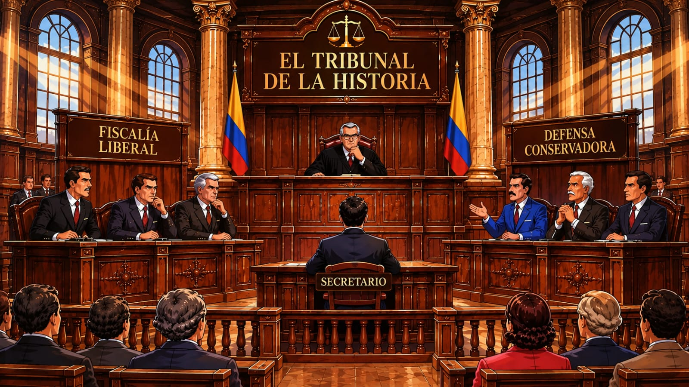

Bienvenido al tribunal. Selecciona un personaje o consulta la biblioteca histórica.

⚖ Biblioteca 📜 Secretaría 📁Gaitán 📁Galán 📁Samper 📁M. Pastrana 📁A. Pastrana 📁Betancur¿Cómo recorrer el tribunal?
Selecciona los iconos dorados para entrar a la biblioteca, consultar la secretaría o abrir los expedientes históricos.